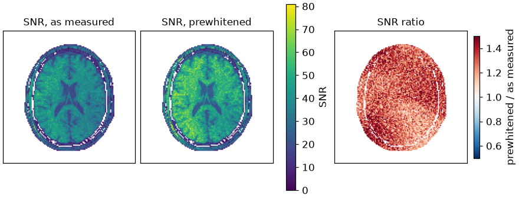

Note
Go to the end to download the full example code.
Noise prewhitening#
The effect of channel-noise correlation on a SENSE reconstruction, and its removal by prewhitening with a noise measurement.
The thermal noise of a receive array is correlated between channels and differs in level from one channel to another. Least squares is the maximum-likelihood estimator only for white noise, so the data are first transformed by a whitening matrix \(W\) with \(W \Psi W^H = I\), \(\Psi\) being the channel noise covariance estimated from a noise-only acquisition [1] [2]. ESPIRiT then calibrates the sensitivities of the whitened channels, and the reconstruction proceeds unchanged.
The signal-to-noise ratio of the two reconstructions is measured by the pseudo-replica method [3]: the same reconstruction is repeated on independent noise realizations added to one noise-free acquisition, and the standard deviation across repetitions is the noise of each voxel.
The phantom and the coil sensitivities are built as in From k-space to image; the cell that does it is hidden on this page and present in the script this page can be downloaded as.
import csv
from pathlib import Path
import brainweb_dl
import numpy as np
import torch
from brainweb_dl import get_mri
import bartorch
import bartorch.tools as bt
SIZE = 128
COILS = 8
Acquisition and calibration#
Every second phase encode is acquired, with 24 central lines kept for calibration. Each pseudo-replica adds a new noise realization to the same noise-free k-space. The sensitivities are calibrated once per pipeline, from the first replica: from the channels as measured, and from the whitened channels.
CALIBRATION = 24
REPLICAS = 32
lines = torch.zeros(SIZE)
lines[::2] = 1.0
lines[SIZE // 2 - CALIBRATION // 2 : SIZE // 2 + CALIBRATION // 2] = 1.0
pattern = lines.reshape(SIZE, 1).to(torch.complex64)
noiseless = bartorch.fft(sensitivities * image, axes=(-2, -1), unitary=True)
def acquire():
"""One replica: the noise-free k-space plus new noise, sampled."""
return ((noiseless + channel_noise((SIZE, SIZE))) * pattern)[:, None]
first = acquire()
maps_measured = bt.ecalib(first, maps=1, calib_size=CALIBRATION, crop=0.8)
maps_whitened = bt.ecalib(bt.whiten(first, noise_scan), maps=1, calib_size=CALIBRATION, crop=0.8)
Pseudo-replicas#
Both pipelines use the same reconstruction, conjugate-gradient SENSE with a small Tikhonov weight and a fixed number of iterations; they differ only in whether the data are whitened first.
The signal-to-noise ratio of a voxel is the magnitude of the mean reconstruction over its standard deviation across replicas. Both are reported over the white matter, where the phantom is homogeneous.
white_matter = memberships[CLASS["WM"]] > 0.8
def snr_map(replicas):
return replicas.mean(0).abs() / replicas.std(0)
for name, replicas in (("as measured", plain), ("prewhitened", prewhitened)):
values = snr_map(replicas)[white_matter]
mean, median = float(values.mean()), float(values.median())
print(f"{name:>12} white-matter SNR {mean:6.1f} (median {median:.1f})")
gain = snr_map(prewhitened) / snr_map(plain)
print(f"SNR ratio, prewhitened over as measured: {float(gain[white_matter].median()):.2f} (median)")
as measured white-matter SNR 41.9 (median 41.5)
prewhitened white-matter SNR 53.8 (median 53.7)
SNR ratio, prewhitened over as measured: 1.28 (median)

With this covariance, prewhitening raises the white-matter SNR by the ratio printed above. The size of the gain depends on the array’s noise correlation and on the spread of the channel noise levels; it is measured here for one simulated covariance.
References#
Total running time of the script: (0 minutes 9.285 seconds)